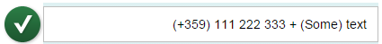

API Properties for Right-to-Left Support in Text-Displaying Controls
API Properties for Right-to-Left Support in Text-Displaying Controls
Introduction
In Arabic, Hebrew and other languages that use the RTL text direction, when you see numerals or text from left-to-right languages (like symbols) on the UI, they are flipped to match the text direction. This common pitfall is visible when representing numerals (phone numbers, dates, currency values, etc.), which actually need to be displayed in LTR mode within the context of an RTL page.
Solution
Two new properites have been introduced to determine the directionality of the target content.
-
textDirection -
textAlign
textDirection adds an HTML dir attribute to the
part of the control that displays the target content.
textAlign and is used for reversing the text alignment. Adding the
textAlign property is only needed if the control doesn’t force
the correct alignment.
The naming of the properties varies based on the actual use case of the control. For example,
the sap.m.DisplayListItem control has label and
value properties for text representation and the most common
use case is to display numeric data in the value part of the
control. The naming of the new property is valueTextDirection and
since the control forces text alignment, the valueTextAlign
property is not needed.
Examples
The examples below illustrate the default behavior of numeric data in an RTL page context – the individual parts of the text are mixed:

After
setting the textDirection and textAlign properties
of the control (inherited from sap.m.InputBase), the numeric data
is displayed in LTR mode, despite the RTL page context. When in LTR mode, the
default text alignment (begin) is kept, which differs from the
page text alignment. Because of this, we should use textAlign: end
as the control doesn’t force the alignment of the text. Here is how this looks in an
sap.m.Input
control:
sap.m.Input ({
value: "(+359) 111 222 333 + (Some) text",
textDirection: sap.ui.core.TextDirection.LTR,
textAlign: sap.ui.core.TextAlign.End
});And here is how it looks on the screen:
This second
example shows the behavior of a control that enforces correct text alignment -
sap.m.DisplayListItem. In this case, you don't need to set the
textAlign
property.
new sap.m.DisplayListItem({
label: "Phone Correct",
value: "(+359) 111 222 333",
valueTextDirection: sap.ui.core.TextDirection.LTR
});And here is how it looks on the screen:

To ensure that your application displays the data correctly, always test your application using RTL mode and real data.
Check the API Reference to see if your controls have these properties implemented.